We have the results from our survey.
Our sample has 30 records but with basic data cleansing we will be working with 28.
We could take some measure of central tendency to predict the age of attendees.
averages<-training[,.(Mean=floor(mean(Age))
,Median=floor(median(Age))
,Mode=Mode(Age)
)]
knitr::kable(averages)| Mean | Median | Mode |
|---|---|---|
| 35 | 34 | 30 |
holdout.lse<-melt(holdout, measure.vars = colnames(averages))
holdout.lse[,Error:=(Age-value)^2]
knitr::kable(holdout.lse[,.(LSE=sum(Error)), variable][order(LSE)])| variable | LSE |
|---|---|
| Mean | 328 |
| Median | 399 |
| Mode | 823 |
training[,expLMres:=expLM$fitted]
ggplot(training, aes(x=Experience, y=Age))+
geom_point()+
geom_line(aes(y=expLMres),colour="blue")+
theme_minimal()
holdout.lse<-melt(holdout, measure.vars = c("expLMres",colnames(averages)))
holdout.lse[,Error:=(Age-value)^2]
knitr::kable(holdout.lse[,.(LSE=sum(Error)), variable][order(LSE)])| variable | LSE |
|---|---|
| expLMres | 307.4961 |
| Mean | 328.0000 |
| Median | 399.0000 |
| Mode | 823.0000 |
fieldLM<-lm(Age~Experience + Field, training)
summary(fieldLM)
##
## Call:
## lm(formula = Age ~ Experience + Field, data = training)
##
## Residuals:
## Min 1Q Median 3Q Max
## -6.630 -3.333 -2.145 2.509 10.339
##
## Coefficients:
## Estimate Std. Error t value Pr(>|t|)
## (Intercept) 24.0717 3.1481 7.646 9.92e-07 ***
## Experience 0.8842 0.2502 3.534 0.00276 **
## FieldBI 7.4147 3.9711 1.867 0.08031 .
## FieldDBA 2.1147 4.5630 0.463 0.64929
## FieldOther 4.9054 4.0467 1.212 0.24304
## ---
## Signif. codes: 0 '***' 0.001 '**' 0.01 '*' 0.05 '.' 0.1 ' ' 1
##
## Residual standard error: 6.247 on 16 degrees of freedom
## Multiple R-squared: 0.5736, Adjusted R-squared: 0.467
## F-statistic: 5.381 on 4 and 16 DF, p-value: 0.006107training[,fieldLMres:=fieldLM$fitted]
ggplot(training, aes(x=Experience, y=Age, group=Field, colour=Field))+
geom_point()+
geom_line(aes(y=fieldLMres, group=Field),colour="blue")+
facet_wrap(~Field)+
theme_minimal()
holdout.lse<-melt(holdout, measure.vars = c("fieldLMres","expLMres",colnames(averages)))
holdout.lse[,Error:=(Age-value)^2]
knitr::kable(holdout.lse[,.(LSE=sum(Error)), variable][order(LSE)])| variable | LSE |
|---|---|
| expLMres | 307.4961 |
| Mean | 328.0000 |
| Median | 399.0000 |
| fieldLMres | 434.4586 |
| Mode | 823.0000 |